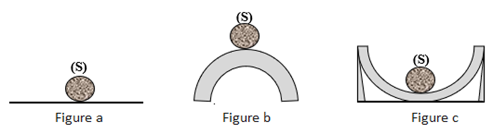
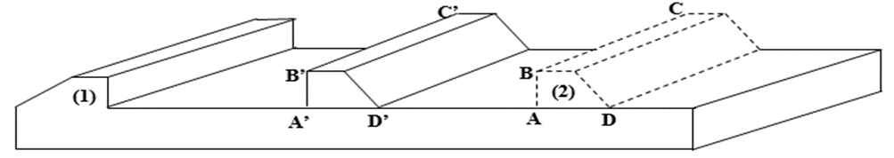

SA1: EQUILIBRE D’UN SOLIDE ET CONVERSION D’ÉNERGIE
Situation de départ
Situation de départ
Koffi et Triomphe, deux élèves en classe de troisième, cheminent toujours au retour du collège. Soudain, alors qu’ils examinaient ensemble leurs dernières notes, Koffi commence à conter à Triomphe ce qui suit :
« Sur un chantier de construction d’un immeuble non loin de ma maison, j’ai toujours vu des ouvriers travailler. Trois de ces ouvriers (Bio, Dossou et Amina) m’ont particulièrement impressionné par leur ardeur et leur organisation au travail :
· Bio est chargé des travaux de levage de mortier au premier étage de l’immeuble ; Il se sert à cet effet d’une poulie, d’un seau et d’une corde. Parfois il utilise un dispositif motorisé comme la grue pour aller plus vite.
· Dossou, lui préfère se servir d’une brouette pour transporter du sable et du ciment jusqu’au lieu de malaxage, en lieu et place de sa tête.
· Amina, quant à elle, entre autres tâches, s’emploie à activer le feu sous une casserole fumante où cuisait du haricot pour les ouvriers du chantier ; car ils doivent manger pour avoir de l’énergie. »
· Triomphe trouva, tout de suite, un sens à l’histoire de Koffi et lui dit : tu ne trouves pas que sur ce chantier on pourrait aborder concrètement les notions sur l’équilibre d’un solide et même de transfert d’énergie ?
C’est une bonne idée, renchérit Koffi ; il nous faut nous rendre sur ce chantier pour voir de plus près ceux dont tu parles.
Tâche
Tâche
- Durée: 05:00/00
- 05:00:00
- Regroupement: En ligne
- Apprenants de la classe de 3è
Elabore une explication à chacun des faits évoqués dans le texte de la situation de départ.
Activité 1: Exprime ta perception initiale des faits évoqués dans la situation de départ
Texte
Activité "remplir les blancs"
1- Relève les faits évoqués dans la situation de départ et dis ce que tu sais de chaque fait évoqué.
2- Échange ta perception des faits avec tes camarades.
3- Évoque des situations similaires à ces faits.
Activité 2 : Circonscris chacun des faits évoqués.
Activité "Lecture"
Une force n’est pas visible, mais on peut voir les ………①………d’une force. Un corps est en équilibre si, dans un référentiel terrestre, tous ses points sont au …………②………ou se déplacent en ligne droite et à vitesse constante. Une force travaille lorsque son point d’………③………se déplace dans une direction qui n’est pas perpendiculaire à sa…………④………. Le travail d’une force s’exprime en ………⑤……… (symbole J) dans le système international.
La quantité de chaleur Q………⑥…..ou cédée par un corps pour passer d’une température ө1 à une …………⑦…………est proportionnelle à la ……………⑧…………du corps et à la différence de température.
Mots ou groupes de mots à utiliser : absorbée ; joule ; ligne d’action ; température ө2 ; effets ; point application ; repos ; masse m.
Complète convenablement le texte à trous du support par les mots ou groupes de mots proposés
Activité 3 : Propose une explication à chacun des faits circonscrits.
Activité "remplir les blancs"
Formule des questions sur chacun des termes suivants :
· Différents type d’équilibre d’un solide
· Condition d’équilibre d’un solide en translation et soumis à deux forces ou à trois forces concourantes ou à des forces parallèles
· Condition d’équilibre d’un solide mobile autour d’un axe fixe : cas des leviers et du treuil
· Travail et puissance d’une force ou d’un couple de forces,
· Condition pour qu'une force travaille
· Travail d’une force constante lors d’un déplacement rectiligne : travail résistant, travail nul et travail moteur
· Travail d’une force ou d’un couple de forces de moment constant dans le cas d’une rotation
· Puissance d’une force ou d’un couple de forces
· Diverses formes d’énergie
· Transfert et conversion d’énergie
· Energie thermique ou calorifique absorbée ou cédée par un corps dont la température varie
Activité 4: Mise à l'épreuve de la proposition d'explication choisie
Sous-activité 4-1 : Quels sont les différents types d’équilibre qui existent ?
Activité "remplir les blancs"
Il existe trois types d’équilibre :
· équilibre stable : le solide S revient dans la position initiale lorsqu’on lui change de position.
· équilibre indifférent : le solide reste toujours en équilibre en tout point du support lorsqu'on lui change de position.
· équilibre instable : le solide glisse et tombe lorsqu’on lui change de position

Fais correspondre à chaque figure le type d'équilibre
Sous-activité 4-2 : Quand dit-on qu’un solide est animé d’un mouvement de translation rectiligne ?
Activité "remplir les blancs"
Informations : Un solide est animé d’un mouvement de translation rectiligne lorsque les lignes décrites par chacun de ses points sont des segments de droite de même longueur ayant des supports parallèles
Support
L’étau est constitué d’un mors fixe et d’un mors mobile.
L’étau ci-dessous est constitué d’un mors fixe (1) et d’un mors mobile (2).

Consigne:
1- Joins par un segment les points A à A’ ; B à B’ ; C à C’et D à D’.
2- Donne la position relative des lignes décrites par les points A, B, C et D au cours du déplacement du mors (2).
3- Compare les longueurs des segments [AA']; [BB']; [CC'] et [DD'] puis conclure.
Licence: licence libre double GPL et EUPL